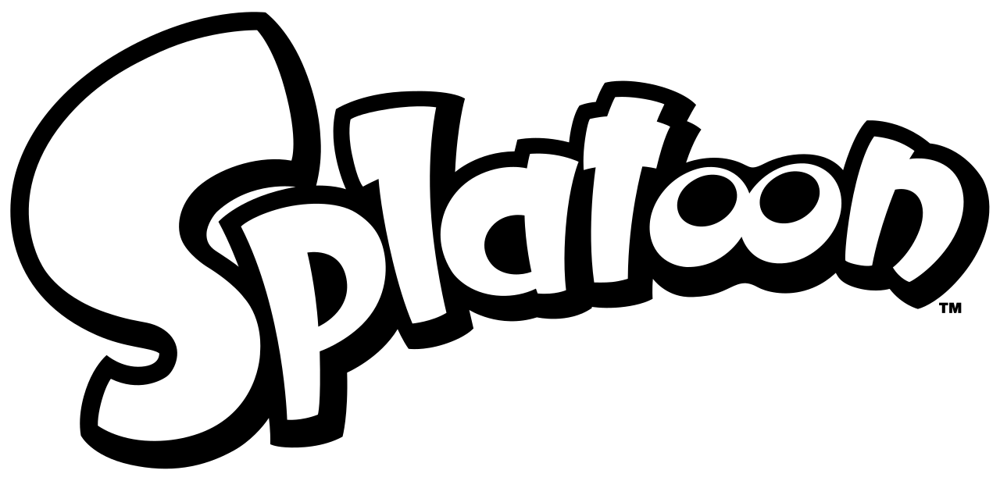
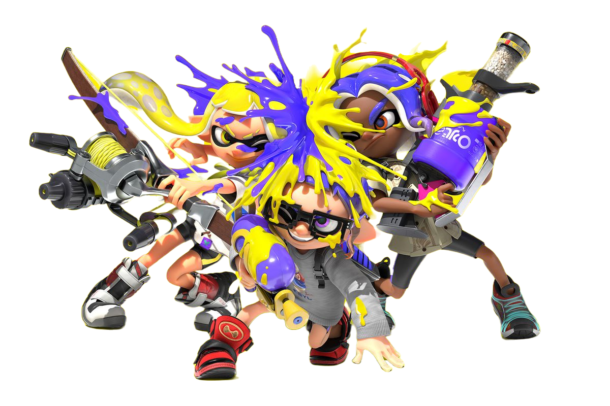
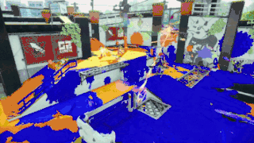
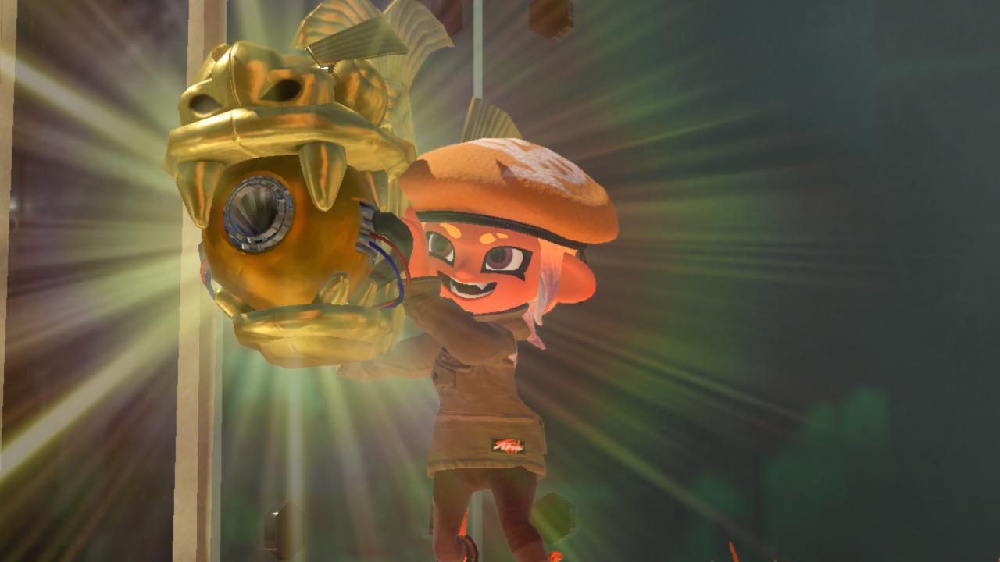
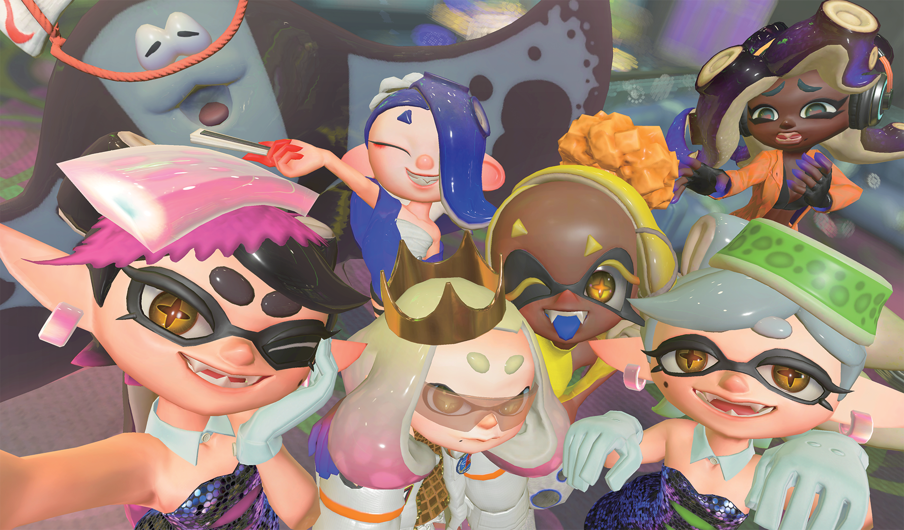

You're a Kid Now, You're a Squid Now!
By: Amanda Gonzales - 9Ruby
What is Splatoon?
Splatoon is a 3rd person shooter game made by Hisashi Nogami, Shintaro Sato, and Nintendo.
It is set in a post-apocalyptic Earth inhabited by anthropomorphic marine animals (squids, octopuses, jellyfishes, etc.)
There are 3 Splatoon games:
- Splatoon 1 (released on May 28, 2015)
- Splatoon 2 (released on July 21, 2017)
- Splatoon 3 (released on September 9, 2022)

Back to Table of Contents
Who are the Characters?

You can play as either Inklings or Octolings.
- Inkling
- - A terrestrial squid
- Octoling
- - A terrestrial octopus
Inklings and octolings are enemies.
Back to Table of Contents
What are the game modes of Splatoon?
- Turf War
- - The objective of this game mode is to claim as much turf as possible by inking the ground with your team's ink color. These matches last up to 3 minutes.
- Anarchy Battles
- - These are available to the player when they reach level 10. Lasts up to 5 minutes, although the battle can be shorter or longer depending on the outcome of the game. Instead of just inking the floor, this game mode contains 4 game modes.
These game modes are:
- Splat Zones
- - Similar to the King of the Hill mode from other games. This game mode revolves around central zone/zones which players have to cover with ink. Whoever has the zone for an amount of time wins.
- Tower Control
- - A team has to take control of a tower and ride it to the enemy's base. The first team to get the tower to the enemy's base wins.
- Rainmaker
- - A player has to grab and take the Rainmaker to the checkpoints near the enemy's spawn points. The first team to get the furthest towards the checkpoints wins.
- Clam Blitz
- - Players must pick up clams scattered around the map. If you get a certain number of clams you will gain the power clam. With this power clam, you have to throw it towards the enemy's goal. When you throw it to the enemy's goal, it will break and you can score clams into the goal. Whoever scores the most clams in the enemy's goal wins.


Back to Table of Contents
Why do I love Splatoon?
- The Characters
- - From their personality to their design, I love everything about these characters.
- Splatoon's unique story and deep lore
- - I really love deep lore, it makes you speculate everything about the story.
- The Music
- - I like the catchy beats and the lyrics that were unique because the Splatoon language was used. I also love the various bands like Squid Sisters, Off the Hook, and Deep cut.

Back to Table of Contents
References
Background from:Cat with Monocle
Definition of Splatoon from:Wikipedia
Definition of Anarchy Battle from:Inkipedia
Image used in character section from:Deviant Art
Splatoon logo from:Wikimedia Commons
Turf War GIF from:Amino
Rainmaker image from:reddit
Idols image from:Nintendo website
Back to Table of Contents